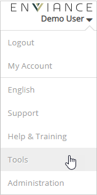
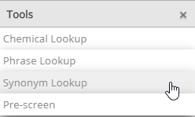
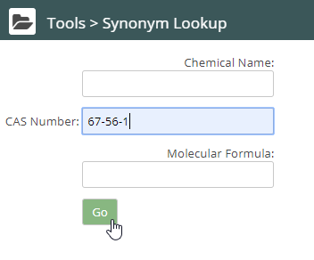
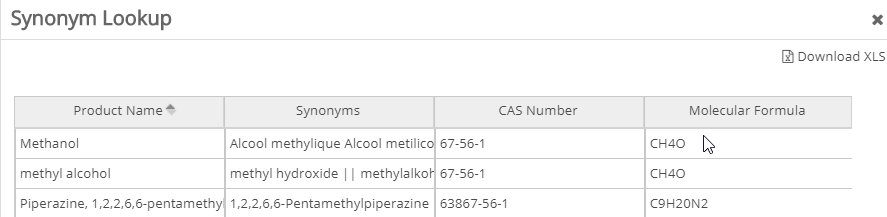

Enter the name of an ingredient in the Synonym Library to find all synonyms for the ingredient, its CAS number, and its molecular formula.
To find synonyms:
Click Tools and select Synonym Lookup.


The Synonym Library page opens.

Click Go.
Vault displays the product names, synonyms, CAS numbers, and molecular formulas for the ingredient. Move your cursor over the synonym to display all the synonyms in the cell.

Note: The synonyms found in the Synonym Library are not limited to the ingredients contained in the SDS stored in your Vault library.
Click the Download XLS link if you want to download the information as an Excel file.